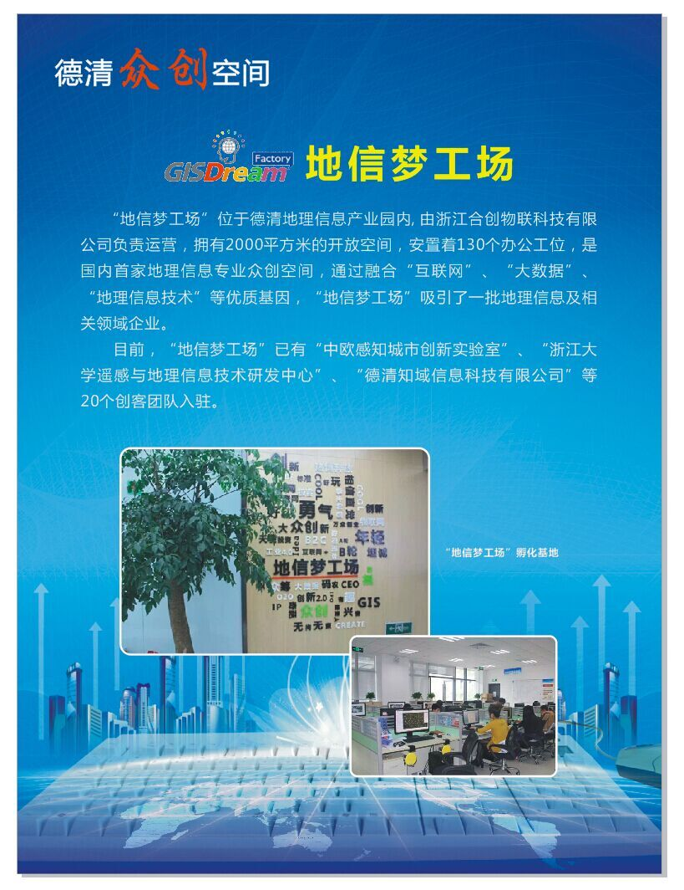

“地信梦工场”位于德清地理信息产业园内，由浙江合创物联科技有限公司负责运营，拥有2000平方米的开发空间，安置着130个办公工位，是国内首家地理信息专业众创空间，通过融合“互联网”、“大数据”、“地理信息技术”等优质基因，“地信梦工场”吸引了一批地理信息及相关领域企业。目前，“地信梦工场”已有“中欧感知城市创新实验室”、“浙江大学遥感与地理信息技术研发中心”、“德清知域信息科技有限公司”等20个创客团队入驻。 